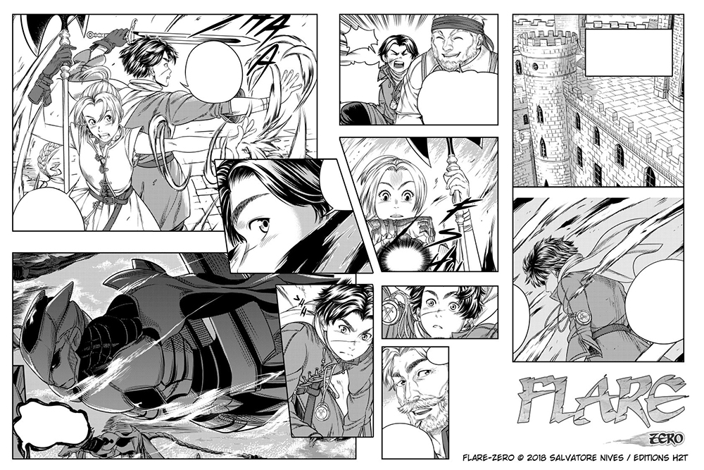

Японските комикси
Манга са комикси или графични романи, произхождащи от Япония. Повечето манга отговарят на стил, разработен в Япония в края на XIX век, а формата има дълга предистория в по-ранното японско изкуство.  Tерминът манга се използва в Япония за обозначаване както на комикси, така и на карикатури. Извън Япония думата обикновено се използва за обозначаване на комикси, първоначално публикувани в страната.
Пионери
В Япония манга четат хора от всички възрасти. Медията включва произведения в широк спектър от жанрове: екшън, приключения, бизнес и търговия, комедия, детективски, драма, исторически, ужаси, мистерии, романтика, научна фантастика и фентъзи, спорт, като много често съдържат дълбоки теми за живота. Комиксите са разделени най-общо на четири категории според целевата аудитория: момчета, момичета, младежи и зрели хора. Те могат да бъдат намерени в книжарниците и магазините за хранителни стоки в цяла Япония.
Пазар
От 50-те години на ХХ век манга става все по-важна част от японската издателска индустрия. Към 1995 г. пазарът на манга в Япония се оценява на 586,4 млрд. йени (6-7 млрд. долара), като годишно в Япония се продават 1,9 млрд. книги и списания за манга. През 2020 г. стойността на японския пазар на манга достига нов рекорд от 612,6 млрд. йени поради бързото нарастване на продажбите на дигитални манга издания, както и увеличаването на продажбите на печатни издания. Мангата е спечелила и значителна световна аудитория.
Производство
Историите на мангата обикновено се отпечатват в черно-бяло - поради ограничения във времето, по художествени причини (тъй като оцветяването може да намали въздействието на творбите) и за да се поддържат ниски разходи за печат - въпреки че съществуват и някои пълноцветни манга. В Япония мангата обикновено се издава серийно в големи списания за манга, често съдържащи много истории, всяка от които е представена в един епизод, който продължава в следващия брой. Събраните глави обикновено се преиздават в томове tankōbon, често, но не само, книги с меки корици. Художникът на манга (на японски mangaka) обикновено работи с няколко асистенти в малко студио и е свързан с творчески редактор от комерсиална издателска компания. Ако дадена манга поредица е достатъчно популярна, тя може да бъде анимирана след или по време на издаването ѝ. Понякога мангата се основава на предишни игрални или анимационни филми.
Манга кафенета
Както има библиотеки за книги, така и съществуват така наречените манга кафенета. Манга кафенетата са места, където клиентите могат да четат от библиотека с манга за определено време срещу съответната такса. Гостите могат да заемат и връщат книги колкото пъти пожелаят в рамките на срока. В много от манга кафенетата се обособяват
и индивидуални отделения, които предлагат на гостите известно уединение за удоволствието от четенето.
Манга кафенетата могат да бъдат открити в повечето градски центрове, обикновено разположени в близост до железопътните гари. В големите градове като Токио и Осака те са многобройни. Много от тях предлагат безплатен поток от безалкохолни напитки и работят като интернет кафенета. Таксите обикновено са около 300 йени за 30 минути, но повечето предлагат пакети, като например три часа за около 1000 йени.